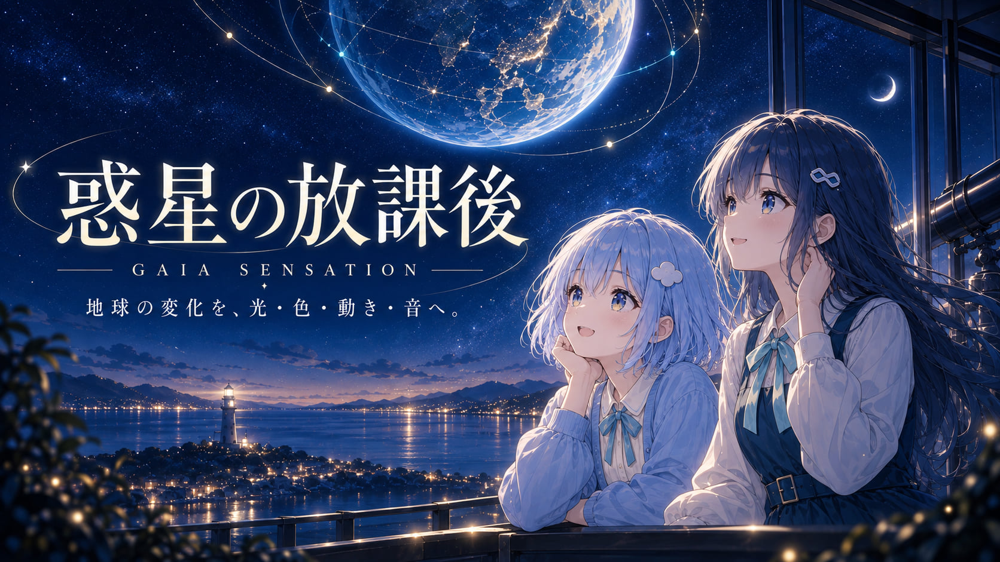
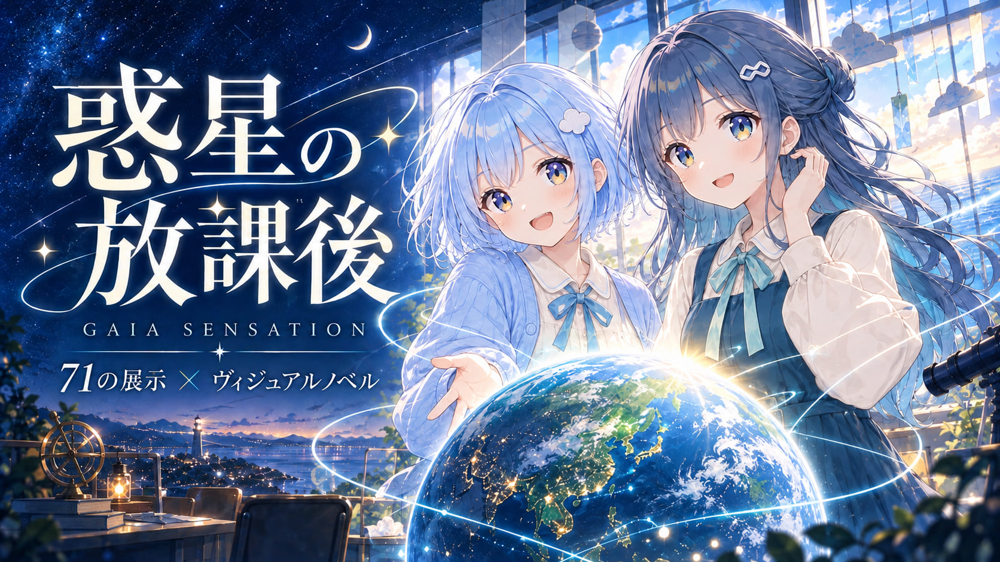
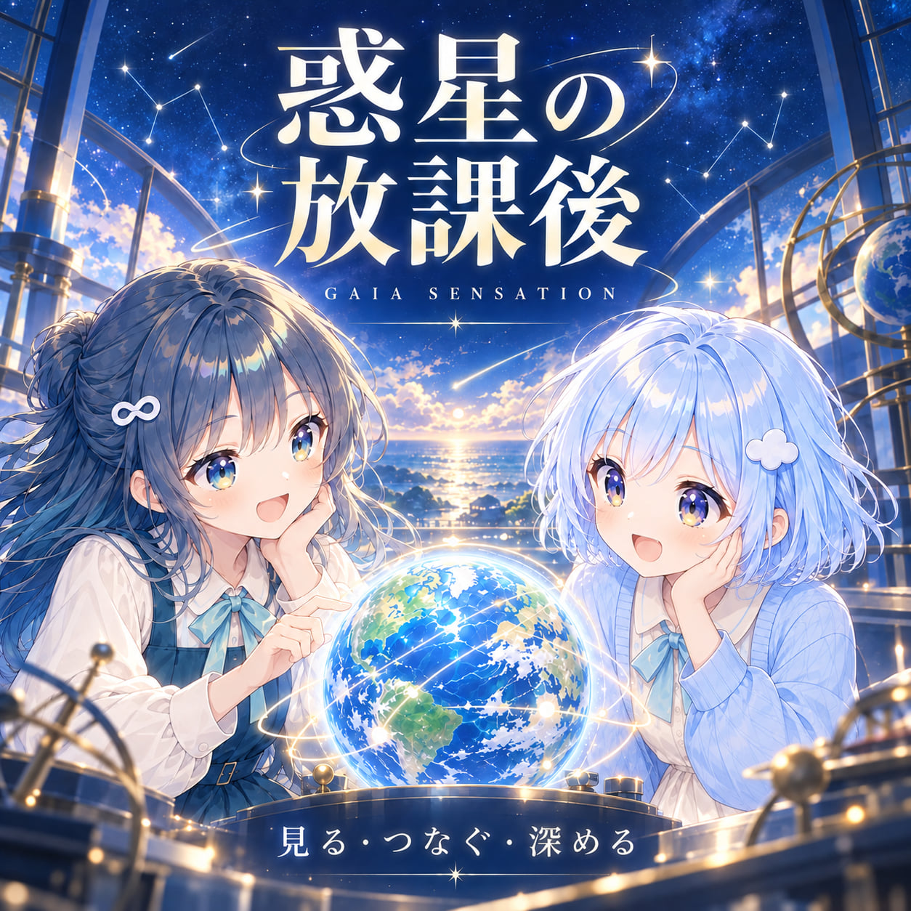
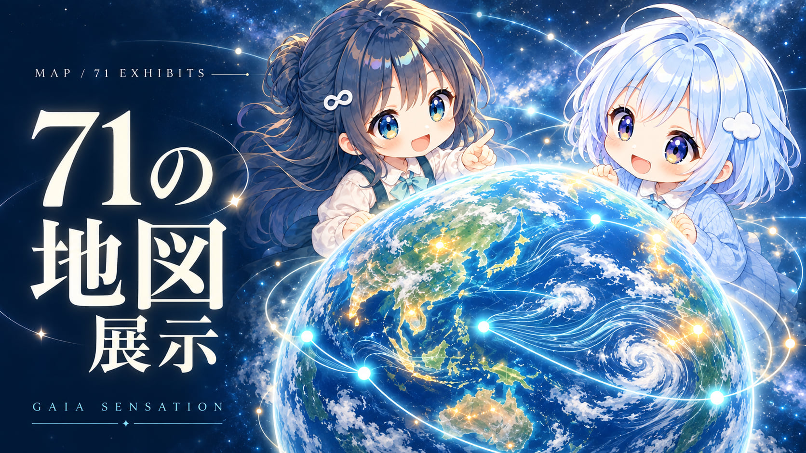
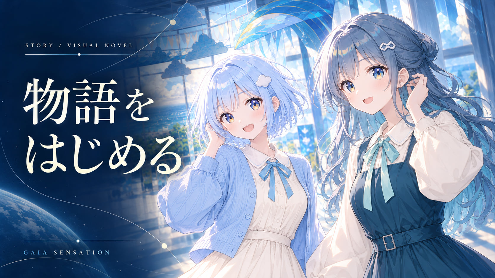
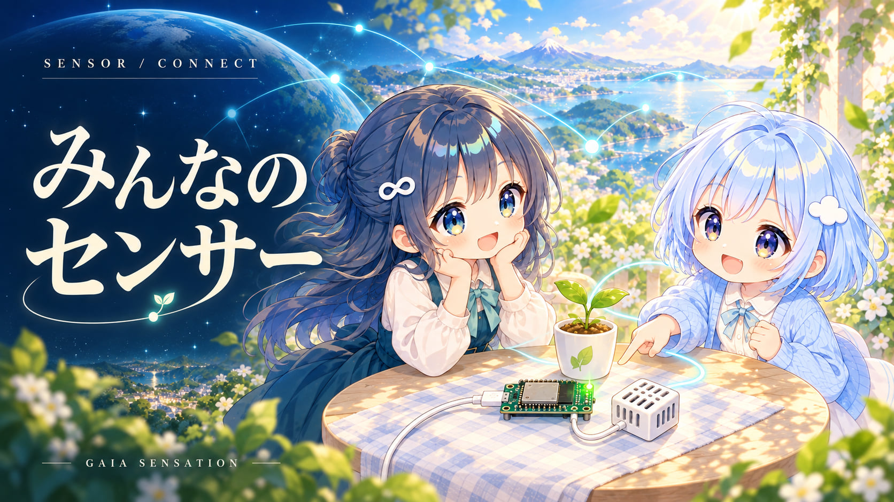
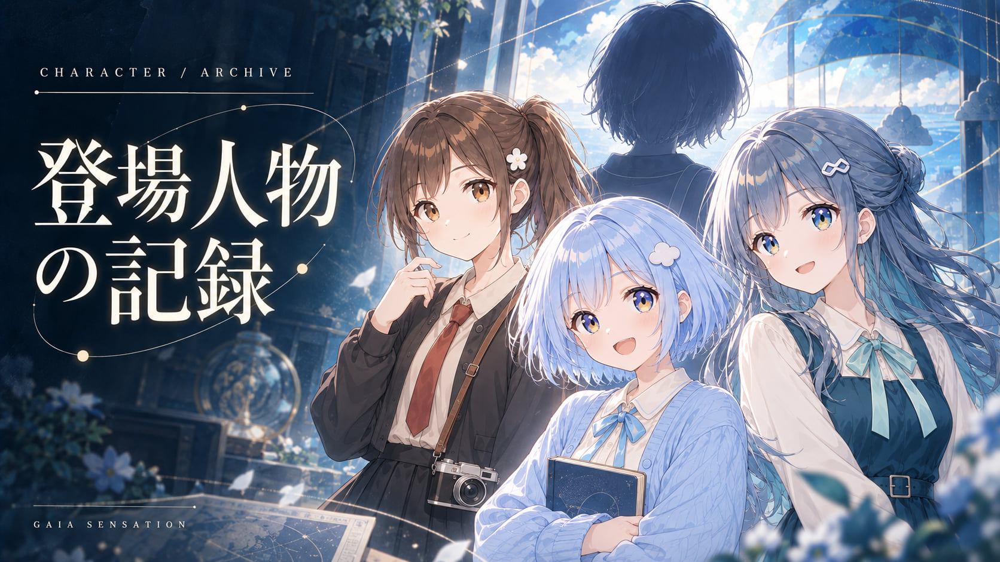
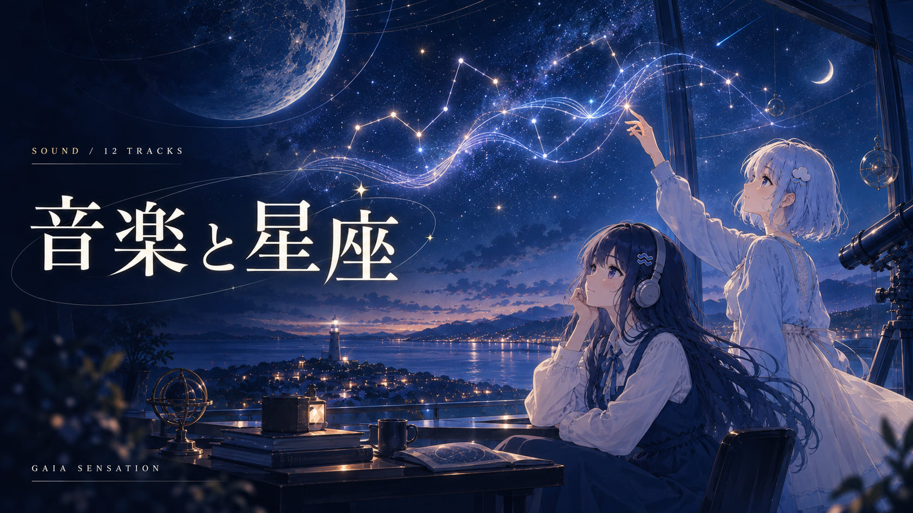

README / CONTEST THUMBNAILS · 2026.09.13
README用7枚と応募用2枚。作品の世界観を伝える紹介イラストです。実画面のスクリーンショットではありません。画像を押すと原寸PNGが開きます。応募用は、横長のみず・正方形のあめの手を修正した版です。

1672 × 941 px · 紹介用イラスト


1254 × 1254 px · 紹介用イラスト




